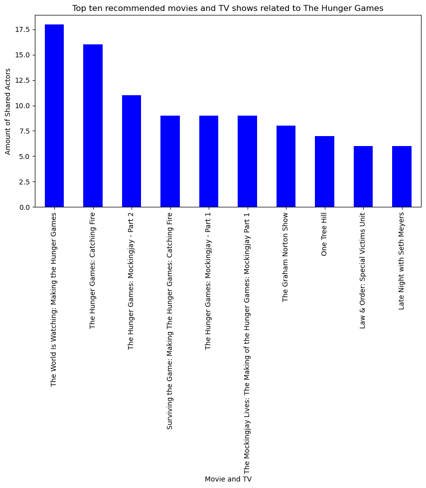

import scrapy
class TmdbSpider(scrapy.Spider):
name = 'tmdb_spider'
def __init__(self, subdir=None, *args, **kwargs):
self.start_urls = [f"https://www.themoviedb.org/movie/{subdir}/"]
'''
Initialize the TmdbSpider instance.
'''
Web Scrapping
In this blog we will go through on how to scrap a website. In this example we will formulate a list of all the actors who acted in the first Hunger Game movie and create a data fram with all the other movies in which they acted in to help recomand new movies to others.
First Step:
Locate the Url that you would be scrapping information from. For this blog we will use this website https://www.themoviedb.org/ and will scarpe a list of actors from the Hunger Game to create recomandtion system that gives users a list of the other movies the actors played in. We First want to make sure that we are in the right enviroment and create a TMDB_scraper folder with all the files we will need by running the following lines in your terminal.
- PIC16B-24W
- scrapy startproject TMDB_scraper
- cd TMDB_scraper
Second Step :
#### Part 1 We create a new file inside the spider directory and named it tmdb_spider.py and run the following lines
To run the code in the terminal we need to run this line with the correct added subdir for the movie page we chose
“scrapy crawl tmdb_spider -o movies.csv -a subdir=”
Part 2
Next we will create and implemnt three diffrent parsing methods to get the url for each actor page and then to scrape their page and collect a list of all the movies they have acted in
Once we have create the intial function to be able to explore the movie we chose for we need to add the correct subdir .
When going to the hunger game movie page the url is as follow : https://www.themoviedb.org/movie/70160-the-hunger-games When running the code in our terminal we can also just write 70160 for the subdir instead of also inclduing the movie name
In this parse method we create a way to navigate to our cast and crew page by adding /cast to our orginal url. This can be more easily visualize by going to the movie webiste. Once you are there select the full cast and crew page and you will get redirected to a new page. If you look at the url you would notice that it now changed to :https://www.themoviedb.org/movie/70160-the-hunger-games/cast
def parse(self, response):
''''
We start on a movie page, and then navigate to the Full Cast & Crew page
''''
# Navigate to the Full Cast & Crew page
full_cast_url = f"{response.url + '/cast/'}"
# Yield a scrapy.Request for the page of each actor listed on the Full Cast & Crew page
yield scrapy.Request(full_cast_url, callback=self.parse_full_credits)
Now that we are at the full cast and crew page the nect step is to go to the actors main page where we can get a list of all the Movies and TV shows they acted in. In order to understand how to find all the information we need we need to inspect the webpage we are at. When we inspect it we are able to use css or xpath to explore and navigate to the right urls. To locate the cast members we will use css to search within the h3 aspect. We will then go through the list of actors by examining ol. To get the actors url we ill examine the href attribute under the div class info
def parse_full_credits(self, response):
'''
Following the previous parse we start off at the main page with all the list of the cast and crew
We will navigate to get a list of all the actors in The Hunger Games movie
This will yiled a request that will get us to each of the actors main page where we
could get a list of the movies and TV shows they have been in
'''
actors_url=response.css('h3:contains("Cast") + ol')
#actor_name=actors_url.css(":: text")
list_a=actors_url.css("div.info a::attr(href)").getall()
for url in list_a:
full_url = response.urljoin(url)
yield scrapy.Request(full_url,callback=self.parse_actor_page)
Now that we are at the actors webapge we will use css to get a list of all the movies they were in. We also used the h2 element to collect all the actors name that were in the title of each of their webpage. Once we collect all the information we created a for loop that yoield a dictionary with the name of the actor and the movies and TV shows that they have been in.
def parse_actor_page(self, response):
'''
In this section we assume that we are starting in the actore webapge
We will be grabbing and formulating a list of all the movies they were in
'''
# get the actor name, in this case we located in the title of the page
actor_name=response.css('h2.title > a::text').get()
# this lines grabs the list of all the movies they have been in
card_credit=response.xpath('//h3[text()="Acting"]/following-sibling::table[1]')
movie_id=card_credit.css('td.role.true.account_adult_false.item_adult_false > a.tooltip > bdi::text').getall()
#This will go through the list of all the movies we have collected and create a dictionary with all the movies and actors
for movie in movie_id:
yield {"actor": actor_name, "movie_or_TV_name": movie}
Part 3
Once we have finished writing all the parsing for the class TmdbSpider we will run the following line with the correct subdir to create a .csv file for all of our actors and moves/ TV they have been in.
scrapy crawl tmdb_spider -o results.csv -a subdir=70160-the-hunger-gamesThird Step:
Analyzing our results:
Now that we have collected all of our data it is time to analyze it and present it. First step is to import the pandas libary as well as our data frame
import pandas as pd
# this line will import our data
rec_table=pd.read_csv("results.csv")
# examine our data frame
rec_table.head()| actor | movie_or_TV_name | |
|---|---|---|
| 0 | Jennifer Lawrence | Die, My Love |
| 1 | Jennifer Lawrence | Burial Rites |
| 2 | Jennifer Lawrence | Sue |
| 3 | Jennifer Lawrence | Mob Girl |
| 4 | Jennifer Lawrence | No Hard Feelings |
To make it easier to visualize our data we can create to list with all the actors and all the movies and Tv shows that they have been in
# selects only the list of actors
actors_l=rec_table['actor'].unique()
#selects only the list of movies
movies_l=rec_table['movie_or_TV_name'].unique()
print(actors_l)
print(movies_l)['Jennifer Lawrence' 'Julie Ivey' 'Bill Bennett' 'John Ross'
'Phillip Troy Linger' 'Jeremy Marinas' 'Mark Meekins' 'Tim Taylor'
'Steve Coulter' 'Dakota Hood' 'Karan Kendrick' 'Shane Bissell'
'Imanol Yepez-Frias' 'Kate Kneeland' 'Annie Thurman' 'Amber Chaney'
'Sharon Conley' 'Mackenzie Lintz' 'Ethan Jamieson' 'Jacqueline Emerson'
'Kalia Prescott' 'Ian Nelson' 'Jack Quaid' 'Latarsha Rose' 'Dayo Okeniyi'
'Nelson Ascencio' 'Leven Rambin' 'Bruce Bundy' 'Judd Lormand'
'Kimiko Gelman' 'Anthony Reynolds' 'Dwayne Boyd' 'Raiko Bowman'
'Sandino Moya-Smith' 'Rhoda Griffis' 'Paula Malcomson'
'Sandra Ellis Lafferty' 'Willow Shields' 'Amandla Stenberg'
'Isabelle Fuhrman' 'Alexander Ludwig' 'Wes Bentley' 'Toby Jones'
'Lenny Kravitz' 'Donald Sutherland' 'Stanley Tucci' 'Woody Harrelson'
'Elizabeth Banks' 'Liam Hemsworth' 'Josh Hutcherson']
['Die, My Love' 'Burial Rites' 'Sue' ... 'Wilder Days' 'American Splendor'
'Miracle Dogs']For our visualization we will create a bar graph with the movies in which there are multiple actors who play in that movie as well as in the Hunger Games.
First we will create a new dataframe of all the movies that mutiple of the same actors have acted in and then create a new one with the number of shared movies and TV shows that they have been in
import matplotlib.pyplot as plt
#create a table with all the shared movies and TV shows the actors in the Hunger Game has been in excluding the first Hunger Game
actors_comm=rec_table[rec_table['actor'].isin(actors_l)&(rec_table['movie_or_TV_name'] != 'The Hunger Games')]
# to be able to graph it we need to add numerical values so we created a new dataframe with number of shared movies and TV shows
num_same=actors_comm['movie_or_TV_name'].value_counts()
#To make sure we did it successfully we can print them
print(actors_comm)
print(num_same) actor movie_or_TV_name
0 Jennifer Lawrence Die, My Love
1 Jennifer Lawrence Burial Rites
2 Jennifer Lawrence Sue
3 Jennifer Lawrence Mob Girl
4 Jennifer Lawrence No Hard Feelings
... ... ...
1946 Josh Hutcherson Ant & Dec's Saturday Night Takeaway
1947 Josh Hutcherson The Division
1948 Josh Hutcherson Teen Choice Awards
1949 Josh Hutcherson ER
1950 Josh Hutcherson Saturday Night Live
[1902 rows x 2 columns]
movie_or_TV_name
The World Is Watching: Making the Hunger Games 18
The Hunger Games: Catching Fire 16
The Hunger Games: Mockingjay - Part 2 11
Surviving the Game: Making The Hunger Games: Catching Fire 9
The Hunger Games: Mockingjay - Part 1 9
..
The Auteur Theory 1
The Green Mile 1
Hamlet 1
CSI: Crime Scene Investigation 1
Miracle Dogs 1
Name: count, Length: 1625, dtype: int64Once we have the list of all the shared movie we will create a bar chart to show the movies and the number of common actors it had in it. To make sure that our bar graph is not too overwheliming we will ,limit our selection and only show the top ten movies that has the largest number of shared actors
#selects only the top 10 movies by selecting the top ten largest values (num_same we collected the values of the shared movies )
top_same=num_same.nlargest(10)
# plot a bar graph that will fit on the page and add the correct X and Y labels as well as title
plt.figure(figsize=(10,5))
top_same.plot(kind='bar',
color='blue',
xlabel='Movie and TV',
ylabel='Amount of Shared Actors',
title= 'Top ten recommended movies and TV shows related to The Hunger Games'
)
plt.show()

As exepected after watching the first Hunger game the most recomanded movies will be the sequelles